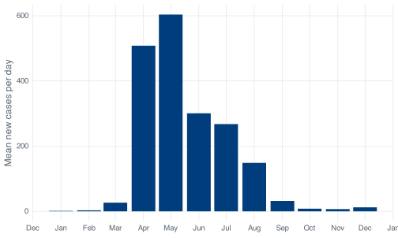

covid %>% count(severity)
#> # A tibble: 3 × 2
#> severity n
#> <fct> <int>
#> 1 Low 215
#> 2 Medium 53
#> 3 High 778 Grouping and summarising
Most quantities asked for in public health are not summaries of a whole dataset but summaries within subgroups: per month, per ward, per age band, per vaccination status. Answering a question such as how the monthly average moved across the circuit breaker means splitting the 345 rows into groups, computing something within each group, and combining the results back into a table.
dplyr calls this split-apply-combine, and it takes two verbs: group_by() to declare the groups, and summarise() to say what to compute within each. count() comes first below, because it handles the most common case in a single call.
Every chunk below uses covid, the dataset you finished the last chapter with. In your own session, covid <- covid_daily() rebuilds it: daily counts differenced out of the cumulative columns, severity as an ordered factor, and a month column.
8.1 Counting with count()
The counts are 215 Low days, 53 Medium days, and 77 High days. The column of counts is called n, which is dplyr’s convention everywhere.
sort = TRUE puts the largest group first, which helps when there are forty categories and only the top few are of interest:
covid %>% count(severity, sort = TRUE)
#> # A tibble: 3 × 2
#> severity n
#> <fct> <int>
#> 1 Low 215
#> 2 High 77
#> 3 Medium 53Give it two columns and it counts every combination that occurs:
covid %>% count(month, severity)
#> # A tibble: 18 × 3
#> month severity n
#> <date> <fct> <int>
#> 1 2020-01-01 Low 10
#> 2 2020-02-01 Low 29
#> 3 2020-03-01 Low 31
#> 4 2020-04-01 Low 5
#> 5 2020-04-01 Medium 7
#> 6 2020-04-01 High 18
#> 7 2020-05-01 High 31
#> 8 2020-06-01 Medium 18
#> 9 2020-06-01 High 12
#> 10 2020-07-01 Medium 19
#> 11 2020-07-01 High 12
#> 12 2020-08-01 Low 18
#> 13 2020-08-01 Medium 9
#> 14 2020-08-01 High 4
#> 15 2020-09-01 Low 30
#> 16 2020-10-01 Low 31
#> 17 2020-11-01 Low 30
#> 18 2020-12-01 Low 31Combinations that never happened are absent rather than zero. January has one row, not three, because there were no Medium or High days in January. This is the documented behaviour, and it can catch you out: a plot built directly from such a table has gaps where the absent combinations would have been. count(month, severity, .drop = FALSE) keeps the empty factor levels when you need a complete grid.
8.2 group_by() and summarise()
count() is a shorthand. The long form spells out both halves and computes any summary you can write, not only counts.
group_by() does not change the data. It attaches metadata recording which rows belong to which group. summarise() reads that metadata, evaluates each expression once per group, and returns one row per group. The 345-row dataset becomes a 3-row table containing only the columns named in the call. The names are chosen for the quantities the columns hold: once that table is printed or passed on, days, mean_cases and worst still say what they contain, where names like x or value would not.
n() is special: it takes no arguments and returns the number of rows in the current group. It only works inside dplyr verbs, because outside one there is no “current group” for it to count.
8.2.1 Counting with sum()
In R, TRUE is 1 and FALSE is 0 in arithmetic, so sum() of a condition counts how many times the condition was true:
The results are 77 High days and 13 days with no new cases at all, with High days making up 22% of the year. mean() of the same condition gives the proportion, for the same reason: the average of a vector of ones and zeros is the fraction that are ones.
The same expressions work inside a grouped summarise(), which is where they are most useful, and they avoid the alternative of filtering and then counting rows. One caveat applies on this dataset:
covid %>%
summarise(
death_days = sum(daily_deaths > 0)
)
#> # A tibble: 1 × 1
#> death_days
#> <int>
#> 1 NAThe result is NA. The deaths column is missing for the first 59 days of 2020, so 60 of the comparisons return NA, and a sum containing NA is NA. The result reports that R cannot answer, which is accurate: it has no information about whether those days had deaths. Add na.rm = TRUE once you have decided that treating “not reported” as “no deaths” is defensible for what you are writing.
covid %>%
summarise(
death_days = sum(daily_deaths > 0, na.rm = TRUE)
)
#> # A tibble: 1 × 1
#> death_days
#> <int>
#> 1 25The count is 25 days on which the cumulative death total went up. That is not the same as 29 deaths, and not the same as 27 either. Those are three different quantities, and the previous chapter deals with the distinction between them.
8.2.2 The .groups message
When group_by() is given two variables, summarise() prints a message about the grouping of its result:
monthly_severity <- covid %>%
group_by(month, severity) %>%
summarise(days = n())
#> `summarise()` has regrouped the output.
#> ℹ Summaries were computed grouped by month and severity.
#> ℹ Output is grouped by month.
#> ℹ Use `summarise(.groups = "drop_last")` to silence this message.
#> ℹ Use `summarise(.by = c(month, severity))` for per-operation grouping
#> (`?dplyr::dplyr_by`) instead.
monthly_severity
#> # A tibble: 18 × 3
#> # Groups: month [12]
#> month severity days
#> <date> <fct> <int>
#> 1 2020-01-01 Low 10
#> 2 2020-02-01 Low 29
#> 3 2020-03-01 Low 31
#> 4 2020-04-01 Low 5
#> 5 2020-04-01 Medium 7
#> 6 2020-04-01 High 18
#> 7 2020-05-01 High 31
#> 8 2020-06-01 Medium 18
#> 9 2020-06-01 High 12
#> 10 2020-07-01 Medium 19
#> 11 2020-07-01 High 12
#> 12 2020-08-01 Low 18
#> 13 2020-08-01 Medium 9
#> 14 2020-08-01 High 4
#> 15 2020-09-01 Low 30
#> 16 2020-10-01 Low 31
#> 17 2020-11-01 Low 30
#> 18 2020-12-01 Low 31The message reports what happened: you grouped by two variables, summarise() consumed the last one, and the result is still grouped by month. That matters, because the next verb in the pipeline will operate per month whether or not you intended it to. Nothing has gone wrong; the message records that the returned object is a grouped table rather than a plain one.
Stating the intended grouping explicitly with the .groups argument suppresses the message:
covid %>%
group_by(month, severity) %>%
summarise(days = n(), .groups = "drop")
#> # A tibble: 18 × 3
#> month severity days
#> <date> <fct> <int>
#> 1 2020-01-01 Low 10
#> 2 2020-02-01 Low 29
#> 3 2020-03-01 Low 31
#> 4 2020-04-01 Low 5
#> 5 2020-04-01 Medium 7
#> 6 2020-04-01 High 18
#> 7 2020-05-01 High 31
#> 8 2020-06-01 Medium 18
#> 9 2020-06-01 High 12
#> 10 2020-07-01 Medium 19
#> 11 2020-07-01 High 12
#> 12 2020-08-01 Low 18
#> 13 2020-08-01 Medium 9
#> 14 2020-08-01 High 4
#> 15 2020-09-01 Low 30
#> 16 2020-10-01 Low 31
#> 17 2020-11-01 Low 30
#> 18 2020-12-01 Low 31.groups = "drop" returns an ungrouped table. .groups = "drop_last" states the default behaviour explicitly. Use "drop" unless you need the remaining grouping, and use ungroup() when a grouped object arrives from elsewhere. Leftover grouping is a common cause of summaries computed per group when a whole-table figure was intended.
8.3 Grouped mutate() keeps every row
summarise() collapses each group to one row; mutate() does not. Group first and mutate() still returns one row per input row, but the calculations inside it see only the current group. This is how you compare each day with its own month.
Predict before you run
August 2020 had 31 days and 4,607 cases. The next chunk works out what share of the month’s total fell on its single busiest day. Write down the percentage you expect. An even spread would put each day at about 3%.
covid %>%
group_by(month) %>%
mutate(share_of_month = daily_cases / sum(daily_cases)) %>%
ungroup() %>%
filter(month == as.Date("2020-08-01")) %>%
slice_max(share_of_month, n = 3) %>%
select(date, daily_cases, share_of_month)
#> # A tibble: 3 × 3
#> date daily_cases share_of_month
#> <date> <dbl> <dbl>
#> 1 2020-08-05 908 0.197
#> 2 2020-08-02 313 0.0679
#> 3 2020-08-01 307 0.0666sum(daily_cases) inside a grouped mutate() is August’s total, repeated down every August row, so the division gives each day’s share of its own month. If you had run the same sum() without grouping you would have divided by 58,599 and got a very small number for everything.
5 August 2020 alone accounts for nearly a fifth of the month. August’s median day was 91 cases and the next highest day was 313, so 908 is not a plausible point on an epidemic curve. MOH’s account at the time attributed the bulk of it to clearance testing in the dormitories: 903 of the 908 were dormitory residents and 581 were linked to a single cluster at Acacia Lodge, many of them past infections detected by that testing rather than new transmission on the day. A monthly mean folds that spike into August’s average without comment, so comparing each day against its own month is a useful check to run before summarising.
Use summarise() when the answer has fewer rows than the input, and a grouped mutate() when the answer has the same number of rows but each row needs a value computed from the rest of its group.
8.4 Grouping by month, done twice
The month column exists because covid_daily() ran floor_date(date, "month"). Rounding a date down to the start of its month is a lubridate one-liner, and the result is still a Date:
floor_date() takes any unit you like, so the same idea gives you weeks or quarters without touching the code that follows:
A second route to the same twelve groups is to cut the first seven characters out of the date:
That works: it gives the right twelve groups in the right order, and for a one-off count it is adequate. Check the class of the column it creates, though:
substr() has no method for Date objects. It calls as.character() on its input, chops the text, and returns text. The grouping variable is now a string that looks like a date, and three consequences follow.
The ordering is correct here, but only because of the storage format. ISO-8601 strings sort chronologically when sorted alphabetically, which is one of the reasons the format is specified that way, so the problem is easy to miss on a dataset that uses it. Read the file in with a different date format and the ordering fails without any message:
Seven characters of 22/01/2020 is 22/01/2, and sorting those puts every 1st of the month first regardless of year. No error is raised, and the result is a plot whose x axis is in the wrong order.
Date arithmetic is also lost. A Date supports adding a month or measuring an interval; a character string does not:
And ggplot will treat the character column as an unordered category, so you lose date axes, sensible breaks and the ability to put a vertical line at 7 April 2020 where the circuit breaker started.
You cannot rescue it by parsing the string back, either, because a year-month is not a date:
as.Date("2020-09")
#> Error in `charToDate()`:
#> ! character string is not in a standard unambiguous formatcharacter string is not in a standard unambiguous format. It raises an error rather than returning NA, so a pipeline built on partial date strings stops at that line and tells you why. Rounding the date with floor_date() and leaving the column as a Date avoids the question.
8.5 Months are not the same length
Here is the monthly table, with the number of days included alongside the totals:
monthly <- covid %>%
group_by(month) %>%
summarise(
days = n(),
cases = sum(daily_cases),
mean_daily = mean(daily_cases),
high_days = sum(severity == "High"),
.groups = "drop"
)
monthly
#> # A tibble: 12 × 5
#> month days cases mean_daily high_days
#> <date> <int> <dbl> <dbl> <int>
#> 1 2020-01-01 10 13 1.3 0
#> 2 2020-02-01 29 89 3.07 0
#> 3 2020-03-01 31 824 26.6 0
#> 4 2020-04-01 30 15243 508. 18
#> 5 2020-05-01 31 18715 604. 31
#> 6 2020-06-01 30 9023 301. 12
#> 7 2020-07-01 31 8298 268. 12
#> 8 2020-08-01 31 4607 149. 4
#> 9 2020-09-01 30 953 31.8 0
#> 10 2020-10-01 31 250 8.06 0
#> 11 2020-11-01 30 203 6.77 0
#> 12 2020-12-01 31 381 12.3 0January has 10 days. The data starts on 22 January, so the January row covers the last third of the month rather than the whole of it. February has 29 because 2020 was a leap year. Comparing 13 cases in January with 89 in February and concluding that the epidemic grew sevenfold would be wrong on two counts: the two periods are of different lengths, and the January figure is not a month’s worth of data.
The days column addresses this and costs one n() call. When you total something over a period, report the length of the period alongside it: totals over periods of different lengths are not directly comparable, while per-day rates are.
ggplot(monthly, aes(x = month, y = mean_daily)) +
geom_col() +
scale_x_date(date_labels = "%b", date_breaks = "1 month") +
labs(x = NULL, y = "Mean new cases per day")
8.6 Returning a table rather than printed lines
Now flag every month with more than five High-severity days. The rule itself is one line of the last chapter’s material.
alerts <- monthly %>%
mutate(status = if_else(high_days > 5, "Alert", "All clear"))One way to report that is to loop over the months and print a line each time, which gives output like this:
The loop itself is straightforward: i takes the values 1, 2 and 3 in turn, and cat() pastes its arguments together and prints them to the console. What it leaves behind is three lines of text on the console. Those lines cannot be sorted, filtered or joined to other data, and counting how many months were marked “Alert” means reading them by eye; when the loop finishes, nothing in the session holds the result.
The same information as a table:
alerts
#> # A tibble: 12 × 6
#> month days cases mean_daily high_days status
#> <date> <int> <dbl> <dbl> <int> <chr>
#> 1 2020-01-01 10 13 1.3 0 All clear
#> 2 2020-02-01 29 89 3.07 0 All clear
#> 3 2020-03-01 31 824 26.6 0 All clear
#> 4 2020-04-01 30 15243 508. 18 Alert
#> 5 2020-05-01 31 18715 604. 31 Alert
#> 6 2020-06-01 30 9023 301. 12 Alert
#> 7 2020-07-01 31 8298 268. 12 Alert
#> 8 2020-08-01 31 4607 149. 4 All clear
#> 9 2020-09-01 30 953 31.8 0 All clear
#> 10 2020-10-01 31 250 8.06 0 All clear
#> 11 2020-11-01 30 203 6.77 0 All clear
#> 12 2020-12-01 31 381 12.3 0 All clearThe table is an object, so sorting it, filtering it, writing it to CSV and plotting it are one more line each:
alerts %>% filter(status == "Alert")
#> # A tibble: 4 × 6
#> month days cases mean_daily high_days status
#> <date> <int> <dbl> <dbl> <int> <chr>
#> 1 2020-04-01 30 15243 508. 18 Alert
#> 2 2020-05-01 31 18715 604. 31 Alert
#> 3 2020-06-01 30 9023 301. 12 Alert
#> 4 2020-07-01 31 8298 268. 12 AlertFour months are flagged, April through July, covering the dormitory outbreak and the circuit-breaker period around it. August falls below the threshold with 4 High days despite containing the 908-case spike, because the rule counts days rather than cases and a single very large day is still one day. Whether that is the right rule depends on what the alert is for; the threshold and the quantity it counts are both choices you make and should be able to defend.
You still need sentences sometimes, for an email or a figure caption. str_glue() builds one by substituting anything in curly braces:
worst <- monthly %>% slice_max(cases, n = 1)
str_glue("The worst month was {format(worst$month, '%B %Y')}: {worst$cases} cases over {worst$days} days.")
#> The worst month was May 2020: 18715 cases over 31 days.Build the table first and generate the sentence from it. If the sentence is the only artefact, a follow-up question means recomputing the analysis to answer it.
8.7 Checking September against the cumulative column
September’s mean daily cases can be computed twice: once with mean(), and once with a loop that adds the values up and divides by 30. Both give the same answer, and both would go on agreeing if daily_cases had been computed wrongly, because they perform the same arithmetic on the same column. A check that uses the same inputs as the calculation it is checking cannot detect an error in those inputs.
An independent check is available. confirmed is cumulative and has not been modified. The check relies on exactly that: the source file stays untouched, and every derivation from it happens in code. September’s new cases must therefore equal the cumulative total on 30 September minus the total on 31 August, whatever lag() did or did not do. If daily_cases were wrong, the two figures would disagree.
Both routes give 31.77, and they share no intermediate column. The differenced route sums 30 values we computed ourselves. The telescoping route reads the raw cumulative column at two rows and ignores everything in between. Because the two routes have no calculation in common, their agreement is evidence that the differencing is right, which is not true of the agreement between mean() and a loop performing the same division.
The general approach: find a quantity you can compute from the untouched source and compare it with the same quantity computed from your derived columns. It takes two lines, and it catches errors that would otherwise leave every number in the output looking plausible.
September’s 30 days averaged 31.8 new cases with a maximum of 86, in a year whose peak day was 1,426. By the end of the third quarter the dormitory outbreak was over.
8.8 Exercises
Exercise 8.1 (High-severity days by month) Produce a table with one row per month showing the number of High-severity days, the number of Medium days, and the number of Low days, plus the number of days of data the month contains.
Then answer two questions in a comment. Which month had the most High days, and is that the same month that had the most cases? If they differ, explain in one sentence why they can.
Stuck? Open for a hint (not the answer)
You can get there with count(month, severity) followed by pivot_wider(), or with a single summarise() containing three sum() calls of the form sum(severity == "High"). The second route is fewer new ideas and puts the columns in the order you choose.
Exercise 8.2 (A monthly alert table) Build a monthly table that assigns each month one of three statuses rather than two: “Alert” when the month has more than 5 High days, “Watch” when it has 1 to 5, and “All clear” when it has none. Include the number of days in each month and the mean daily cases.
Then change the rule so that it triggers on the mean daily case rate rather than on a count of days, using a threshold you pick and state. Report which months change status, and write one sentence saying which of the two rules you would rather defend in a meeting, and why.
Stuck? Open for a hint (not the answer)
Three statuses means case_when() rather than if_else(), and the same first-match-wins ordering rules from the previous chapter apply. Keep both status columns in the same table so the comparison is a single filter() on the rows where they disagree.
Exercise 8.3 (Cross-check a month that is not September) Pick a month other than September. Compute its mean daily cases from daily_cases, then compute the same figure by telescoping the confirmed column between the last day of the previous month and the last day of your chosen month. Confirm they agree.
Then try the same trick on January, and explain what goes wrong and why. Fix it, and say what the fix assumes.
Stuck? Open for a hint (not the answer)
January’s problem is that there is no “last day of the previous month” in the file. Think about what confirmed was on 22 January 2020 and whether that value lets you avoid needing one.